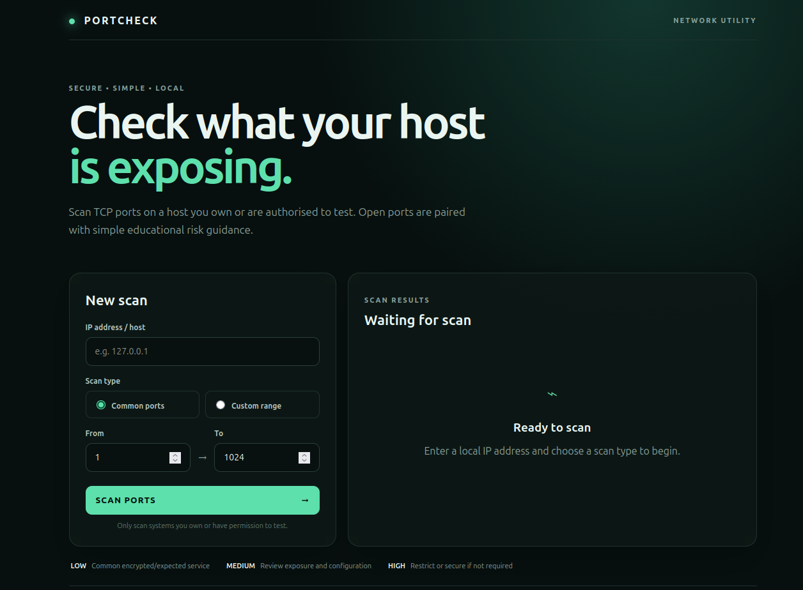
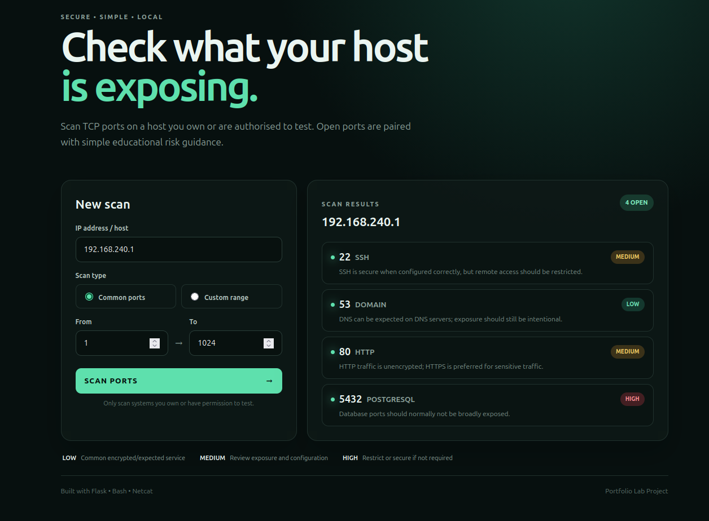

PROJECT 03
PortCheck Network Port Scanner
A lightweight network utility for identifying open TCP ports and understanding the services exposed on a host.
OVERVIEW
What I worked on
PortCheck started as a Cloud and DevOps bootcamp task to
create a Bash script that accepts a target host and uses
Netcat (nc) to determine whether TCP ports
are open.
I extended the task by building a Flask web interface that allows the user to scan a controlled set or range of ports. Detected ports are displayed together with their common services and basic risk guidance, making the results easier to understand.

WORKFLOW
How it works
The user enters a target IP address or hostname through the web interface. The input is validated before being passed to the backend scanning process.
Flask executes the Bash scanner, which uses Netcat to test TCP connectivity against the selected ports. Ports that successfully accept a connection are returned to the application.
Detected ports are then mapped to common services before being presented through the interface together with basic risk guidance.
RESULTS
Scanning my environment
I tested PortCheck against my own local environment. The scanner identified reachable TCP services and displayed their corresponding port, service and risk guidance.
During testing, the scanner detected services including SSH, DNS, HTTP and PostgreSQL. The risk indicator provides additional context about the potential exposure of each service rather than treating every open port as a vulnerability.

VERIFICATION
Checking the results
To verify the scanner results, I compared them with the
listening TCP ports reported directly by Ubuntu using the
ss networking utility.
sudo ss -tlnp
This provided a second way to confirm that the ports identified by PortCheck corresponded with services actually listening on the system.
DEVSECOPS
Handling input safely
One of the main learning objectives was understanding the security risk of passing user-controlled input to operating system commands.
Target and port values are checked before they are passed to the backend scanner.
Port values are restricted to valid TCP port numbers between 1 and 65535.
User values are passed as separate subprocess arguments instead of being inserted directly into a shell command.
RISK GUIDANCE
Making the results useful
I added simple Low, Medium and High indicators to make the scan results easier to interpret.
Lower exposure concern, although the service should still be configured and maintained securely.
A service that should be intentionally exposed and protected with appropriate configuration and access controls.
A sensitive service where unnecessary network exposure should generally be restricted.
These indicators are intended as basic educational guidance. An open port does not automatically mean that a system is vulnerable. Configuration, authentication, firewall rules and network exposure also affect the actual security risk.
REFLECTION
What I learnt
This project helped me understand TCP ports and listening services more practically by allowing me to compare the results from my own scanner with Linux networking tools.
I also gained hands-on experience with Bash scripting, Netcat, Flask integration and secure handling of user input.
Most importantly, it showed me how a simple Linux command-line utility can be integrated into a web application while still considering basic DevSecOps practices.